캐릭터
*마법옆의 괄호안의 번호들은 특정 레벨의 마법을 배우는데 필요한 레벨을 가리키는것입니다. 전직전레벨과 전직후 레벨을 모두 합산하여 계산된것이니 전체레벨에서 자신이 전직했던 레벨을 빼시면 마법을 얻으실수 있는 전직후의 레벨이 나타납니다. 이미 전직하여 동료가 된 캐릭터들은 그 레벨에서 20을 빼십시오. 즉 레벨30에 배울수 있는 마법이 있고 또 그 해당 캐릭터는 레벨10에 전직을 했다면 레벨21에 배울수 있는것입니다.
*등장/언급된 게임들은 언제나 샤이닝포스1을 제외하는것입니다.
맥스
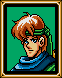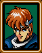
영문명 : 맥스
등장/언급된 게임들 : 샤이닝포스2, 샤이닝포스 외전 3 : 파이널 컨플릭트
장착 가능한 무기 : 검
동료가 되는 시기 : 처음부터
배울수 있는 마법 : 주인공치곤 없음
설명 : 샤이닝포스의 리더이자 가장 강력한 캐릭터이기도 합니다. 어느 레벨에 전직을 하든지 강력한 파괴력을 자랑합니다. 물론 맥스가 죽으면 전투를 다시 시작해야한다는 단점은 존재하지만 그만큼 파괴력이 있으니 자주 맥스를 쓰셔도 좋은 결과를 얻으실수있습니다. 빛의검이나 카오스브레이커를 얻을시엔 그 아이템을 사용하여 마법을 무한으로 쓰실수도 있습니다. 아주 쓸모있습니다.
총점 : 10/10
루크
"준비되었어 맥스. 놈들만 줄세워놓으면 내가 알아서 썰어버릴게!"
"꽤 지겹군. 언제 전투를 할수있는거지?"
일본명 : 라그
등장/언급된 게임들 : 샤이닝포스 외전1
장착 가능한 무기 : 검과 도끼 (전직전), 도끼전용 (전직후)
동료가 되는 시기 : 첫번째전투전에 마을에서 자동으로
배울수 있는 마법 : 없음
설명 : 드워프답게 몸빵도 좋고 공력력도 쎕니다. 다만 느린 이동력때문에 전직은 늦는편입니다. 다른 드워프인 고트와 비교하자면 초반에는 고트보다 나쁘지만 후반부엔 결국 더 강해집니다.
총점 : 8/10
켄

"드디어! 진짜기사가 될수있는 기회다! 날 동참시켜줘!"
"여기에서 빠져나오게 하지않으면 미쳐돌고말거야!
등장/언급된 게임들 : 샤이닝포스 외전1
장착 가능한 무기 : 투창(Spear)혹은 Lance(창)
동료가 되는 시기 : 첫번째전투전에 마을에서 자동으로
배울수 있는 마법 : 없음
설명 : 수많은 기사들중에 한명이라 보통 켄이 그다지 특별나게 뛰어나지 않게 보일것입니다. 분명 방어력은 기사들중 가장 낮은편에 속하나 그대신 초반에 HP증가가 많습니다. 막판에 가서도 그 약한 방어력마저 50~60정도로 개선이 되니 꼭 나쁜 캐릭터는 아닙니다.
총점 : 8/10
타오
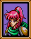
"내 마법을 시험해보고싶어. 어서 가서 몬스터들을 몇마리 태우자!"
"맥스 네가 필요하면 언제든지 준비가 되어있을게."
등장/언급된 게임들 : 없음 (샤이닝포스외전1의 의심스럽긴합니다.)
장착 가능한 무기 : 지팡이
동료가 되는 시기 : 첫번째 전투전에 마을에서 자동으로
배울수 있는 마법 : 블레이즈 (1 4 12 20), 슬리프 (8) 디스펠 (16) 부스트 (27)
설명 : 초반부에 가장 절실하게 필요한 캐릭터입니다. 좀비들을 태워버릴때 안리와 함께 훌륭하게 사용할수 있거든요. 언데드계열에겐 블레이즈가 유용합니다만 결국 후반부에 가서는 블레이즈4보다 MP가 2만 더 비싸고 대미지가 10정도 다 다는 프리즈4를 쓰는 안리의 손을 들어주겠습니다.
총점 : 9/10
한스
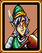
"우리들이 필요하다면 우린 여기 있다는것을 잊지말라고!"
"제발 선진에다 놓지 말라고. 맞는건 싫단말야."
등장/언급된 게임들 : 샤이닝포스 외전1
장착 가능한 무기 : 활
동료가 되는 시기 : 첫번째 전투전에 마을에서 자동으로
배울수 있는 마법 : 없음
설명 : 샤이닝포스 하시는분들이 대부분 쓰레기로 여기시는 한스입니다. (요구르트 제외) 하지만 한스는 그렇게 나쁘지 않습니다. 궁수에게 가장 좋은 활인 요정의활을 얻은후에는 그래도 조금 쓸모있게 사용하실수 있습니다. 게다가 같은 요정궁수인 다이앤과 비교해서 처음에만 한스의 스탯이 더 딸릴뿐이지 꾸준히 키워주면 결국은 백발백중 후반부엔 다이앤보다 더 높은 스탯을 지니게 됩니다. 물론 공격력에선 라일이 우수하지만 이동력은 한스가 더 우수합니다. (요정이므로 숲속에서의 이동이 빠릅니다.) 후반부에 궁수가 필요하다면 한스를 한번 써보세요. 물론 꽤 인내심이 있는 플레이어들에게만입니다.
총점 : 6/10
로우
"나는 힐러로서 가장 유용하지만 필요하다면 몇방은 때릴수있어. 상처를 치료할수 있는 힐러긴 하지만 불필요하게 다치진말라고 알았어?"
"ZZZZZZzzzzzZZZZZzzzzz..."
등장/언급된 게임들 : 샤이닝포스 외전1
장착 가능한 무기 : 지팡이
동료가 되는 시기 : 첫번째 전투전에 마을에서 자동으로
배울수 있는 마법 : 힐 (1 7 16 22) 디톡스 (4) 슬로우 (10 19) 퀵 (13 25)
설명 : 힐러이므로 크리스를 얻을때까지 거의 반드시 필요한 캐릭터입니다. 다만 계속 키우기에는 오라를 얻지 못하는것이 좀 걸립니다. 샤이닝포스2의 실질적인 부스트인 퀵마법을 얻는다는게 장점이나 샤포2와 달리 다섯명이 최고입니다.
총점 : 5/10
공

"만약 전투와 회복 둘다 필요하다면 내가 바로 그 적임자다. 최선을 다하겠다!
"날 뽑으라고! 날 뽑아! 어서 맥스!"
등장/언급된 게임들 : 샤이닝포스 외전1
장착 가능한 무기 : 없음
동료가 되는 시기 : 일곱번째 전투전 그란스마을에서 대화를 하면
배울수 있는 마법 : 힐 (1 8 16 24) 오라 (30)
설명 : 한스정도는 아니지만 공역시 그리 샤이닝포스1 플래이어들 사이에
달갑지 않은 캐릭터이기도 합니다. 한스와는 달리 그건 그럴수밖에 없습니다. 공은 초반만 빼곤 진짜 꾸집니다. 그나마 오라를 얻긴 하지만 힐러로써 키우자면 다른 힐러들이 더 아깝습니다. 게다가 그나마 장점이라고 여기는 공격력(다른 힐러와 비교하자면)도 결국 후반부엔 크리스가 더 우세하게 됩니다. (공격력이나 방어력이나)
총점 : 5/10
고트
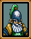
"가자고 맥스!"
"이보게 맥스. 우리는 이곳에서 잘 놀고있다네. 다음에 보세!"
등장/언급된 게임들 : 없음
장착 가능한 무기 : 도끼와 검 (검은 전직전만)
동료가 되는 시기 : 두번째 전투후 술집에서 이야기한후
배울수 있는 마법 : 없음
설명 : 루크와 그다지 틀린점은 없습니다. 다만 스탯은 고트가 빠르게 오르나 최종반에선 루크가 능가를 한다는점입니다.
총점 : 8/10
매이

"자 맥스 어서. 우리들의 복수는 기다릴수가 없다!"
"스트레칭중이야. 몸매균형을 잡아야하거든."
등장/언급된 게임들 : 없음
장착 가능한 무기 : 창 혹은 투창
동료가 되는 시기 : 전투2후 가디아나성에서 자동으로
배울수 있는 마법 : 없음
설명 : 기사들중에 아서를 제외하고 가장 높은 방어력과 HP를 가지게 되는 기사입니다. 처음부터 끝까지 좋은 기사이지요. 게다가 아서와는 달리 그다지 노가다가 필요없어도 강함을 유지하는 캐릭터입니다. 레벨20에 전직을 시키지 않는다면 매이가 최고기사일것입니다.
총점 : 9/10
크리스

"싸움은 물론 회복도 하겠습니다. 지도만 하시면 따라가겠어요."
"쉬면서 회복마법을 연습하고있어요."
일본명 : 칩
등장/언급된 게임들 : 없음
장착 가능한 무기 : 지팡이
동료가 되는 시기 : 알테론성 감옥에서 자동으로
배울수 있는 마법 : 힐 (1 5 16 21) 슬로우 (8) 퀵 (12) 오라 (20 28)
설명 : 믿기지 않으시겠지만 샤이닝포스1 최고의 힐러가 바로 크리스입니다. "오라4를 배우게되는 토라수가 두눈 시퍼렇게 뜨고 살아있는데도?"라고 느끼실지도 모르시겠지만 샤이닝포스1은 샤이닝포스2가 아닙니다. 힐4는 HP를 다 채워주는거 맞지만 오라4는 HP를 40까지밖에 채워주지 못합니다. 군사들이 서로 멀리 떨어져있다면 모를까 보통은 오라2로도 충분하다고 생각되며 오히려 힐4가 더 중요하다고 생각합니다.
총점 : 9/10
안리

"맥스, 네 노력에 고마움을 느껴. 나도 최선을 다하겠어."
"맥스! 이곳에서 자꾸 도는 이야깃거리때문에 미칠려고해. 날좀 나가게해줘! "
등장/언급된 게임들 : 샤이닝포스 외전1
장착 가능한 무기 : 지팡이
동료가 되는 시기 : 마나리나에서 자동으로
배울수 있는 마법 : 블레이즈 (1 8) 프리즈 (5 13 16 23) 머들 (10) 볼트 (19 26)
설명 : 최고의 마법사라고 할수있겠습니다. 블레이즈4보다 더 쓸모있는 프리즈4를 가지고 있으며, 또 다수의적을 물리칠땐 또 볼트2를 쓸수 있습니다. 게다가 마법사들의 최고약점이라 할수있는 방어력도 안리는 그나마 마법사들중에서는 제일 높은편입니다.
총점 : 9/10
아서
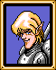
"나를 싸움에 가담시켜줘서 고맙습니다. 실망시켜주지 않겠습니다!"
"나도 싸워도 됩니까? 제발입니다. 나를 다크솔과 붙게 해주십시오!"
등장/언급된 게임들 : 샤이닝포스3
장착 가능한 무기 : 투창(스피어), 창(랜스)
동료가 되는 시기 : 마나리나에서 볼일을 다본후 아서에게 대화를 하면
배울수 있는 마법 : 블레이즈 (15) 프리즈 (20) 볼트 (25)
설명 : 명실공히 샤이닝포스1에서 제일 으뜸인 기사입니다. 물론 레벨20에 전직을 한다는 조건하에서입니다. 레벨10에 전직을 하면 그야말로 거의 최하급이 되버리고 맙니다. 아서가 가장 많은 스탯상승을 얻는때가 바로 레벨의 막바지때거든요. 꽤 레어 품종(?)의 켄타우르스이기때문에 마법도 씁니다. 겨우 레벨1 마법들이지만 그래도 가끔가다가 볼트1씩 쏴주는게 어디입니까? 후훗.
총점 : 10/10
발바로이

"다크솔을 무찌를때까지 아니면 내가 전장에서 쓰러질때까지 끝까지 싸우겠다."
"휴식을 취하니 참 좋군!"
등장/언급된 게임들 : 없음
장착 가능한 무기 : 검
동료가 되는 시기 : 2장을 마치며 자동으로
배울수 있는 마법 : 없음
설명 : 조인은 씨리즈전통적으로 하늘을 날수있다는 장점과 공격력이 다른 검사들보다 현저히 약하다는 단점이 있습니다. (외전씨리즈의 조인들은 제외^^;) 샤이닝포스1의 조인들은 그야말로 최.악.입니다. 가장 문제가 되는 공격력을 그래도 무사시나 한조의 둠블레이드를 같이 쓰게 하여 좀 발전시키거나, 혹은 카오스브레이커를 들게 하는 방법도 있습니다. (아이템복사하면 됩니다.)
총점 : 6/10
아몬

"공중전은 내게 맡기세요! 이 날개가 있는한 누구도 나와 상대할수없습니다!"
"따분해애애애애애애! 액션을 원한다고요!"
등장/언급된 게임들 : 없음
장착 가능한 무기 : 검
동료가 되는 시기 : 2장을 마치며 자동으로
배울수 있는 마법 : 없음
설명 : 발바로이와 동일합니다만 방어력과 HP가 더 딸립니다. 보통 한두대만 맞아도 골로 가지요.
총점 : 5/10
다이앤

"저와함께라면 공중의적을 더이상 두려워할필요가 없습니다."
"어서요 맥스. 우리들도 재미좀 보자구요! 이곳에서 지루해 죽겠다고요!"
일본명 : 디아네
등장/언급된 게임들 : 없음
장착 가능한 무기 : 활
동료가 되는 시기 : 3장 첫번째전투전 자동으로
배울수 있는 마법 : 없음
설명 : 보통 한스보다 더 좋다고 생각하지만 그거야 처음에만 그렇고
후반부엔 오히려 한스보다 더 떨어집니다. 게다가 절실히 필요한
방어력마저 현저히 떨어져버리기때문에 최악의 궁수는 물론
요구르트를 제외한 최악의 캐릭터라 할수있겠습니다.
총점 : 4/10
자일로

"나는 전투를 위해 태어났다. 전장이야말로 두번째 고향이지."
"자신의 무기를 잘 간수하는것. 아버지께서 항상 그렇게 말씀하셨지!"
일본명 : 자파
등장/언급된 게임들 : 없음
장착 가능한 무기 : 없음
동료가 되는 시기 : 3장 전투1 종료이후 이벤트로 자동으로
배울수 있는 마법 : 없음
설명 : 정말 강하다고밖에 볼수없는 캐릭터입니다. 기동력도 좋으니 꼭 데려가시길 바랍니다. 다만 레벨10에 전직을 하면 좀 약하긴 합니다.
총점 : 9/10
펠

"지불같은건 상관하지 말라고. 이건 이제 개인적이야."
"푹 쉬겠어. 가끔 훈련이나 하고말야. 날 찾거든 이곳에 오라고."
일본명 : 페일
등장/언급된 게임들 : 없음
장착 가능한 무기 : 창 혹은 투창
동료가 되는 시기 : 3장을 마치며 자동으로
배울수 있는 마법 : 없음
설명 : 레벨10에 전직하시는분들께 추천하는 기사입니다. 레벨20에
전직을 하면 다른 기사들보다 쳐지긴 합니다. (반카제외) 아서와는
반대격이라고 생각하시면 됩니다.
총점 : 6/10
요구르트

"헬멧이 잘 끼워졌나? 아무래도 그런것같애."
"내 헬멧이 마음에 들어?"
등장/언급된 게임들 : 샤이닝포스 외전3 파이널 컨플릭트, 클라이맥스 랜더스
장착 가능한 무기 : 없음 (요구르트링이라고 쓸까? -_-)
동료가 되는 시기 : 4장 파오마을 교회주위에서
배울수 있는 마법 : 없음
설명 : 단순히 최악의 캐릭터라고 할수도 없을만큼 요구르트는 진짜
존재목적을 알수없는 캐릭터입니다. 레벨업도 못하고 요구르트링만 잔뜩 얻고 그걸 다른 캐릭터에게 끼우면 그마저도 요구르트가 됩니다.
총점 : 0/10
코키치

"그 룬파우스트놈들을 데리고 오너라. 전장에서 밟아주겠다!"
"꽤 박진감넘치는 시대에 살고있지않나? 아 물론 난 이제 못볼날도 멀지 않았지만말야."
등장/언급된 게임들 : 없음
장착 가능한 무기 : 창 혹은 투창
동료가 되는 시기 : 3장 첫번째전투후 코키치곁의 기계를 조사한후 4장에서
배울수 있는 마법 : 없음
설명 : 조인들이 믿음직스럽지않다면 코키치는 어떨까요? 샤포2에서의 페가수스나이트와 거의 비슷한꼴입니다. 스탯은 그다지 높진않지만 그래도 발키리가 있으면 좀 좋아집니다.
총점 : 7/10
반카
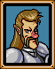
"맥스, 실망시키지 않겠다! 무슨일이 있어도 날 믿으라고!"
"아니 이게 누구야? 오랜만일세 맥스!"
일본명 : 반가드
등장/언급된 게임들 : 없음
장착 가능한 무기 : 창 혹은 투창
동료가 되는 시기 : 4장에서 파오기차가 떠난후 대화를 통하여
배울수 있는 마법 : 없음
설명 : 그다지 기대가 안되는 기사입니다. 펠보다 HP와 방어력이 약간 더
높기만 할뿐, 공격력은 기대할수가 없습니다.
총점 : 5/10
건츠

"갈 준비가 다됬다!"
"준비가 다 됬다구. 기회만 줘."
일본명 : 간츠
등장/언급된 게임들 : 없음
장착 가능한 무기 : 창 혹은 투창
동료가 되는 시기 : 2장 린도에서 대화후 4장 파오마을에서 양우리에서
배울수 있는 마법 : 없음
설명 : 아주 좋은 기사입니다. HP도 높고 방어력은 그야말로 기사중 최고입니다. (다만 게임후반부엔 방어력이 그리 쓸모가 없습니다.) 공격력도 아서와 막상막하격으로 높은만큼 정말 유용한 캐릭터라 할수 있겠습니다. 유일한 치명적인 단점은 바로 낮은 기동력입니다. 겨우 4밖에 안되죠. 5장에서 이동력향상반지를 껴주던지 7장에서 터보페퍼를 먹여야합니다. 낮은 기동력이 있다하나 지형에 구애를 받지 않는다는 장점은 있습니다.
총점 : 9/10
도밍고

"괜찮다면 난 뒤에서 있을게. 하지만 꼭 해야하겠다면 싸움도 하겠어."
"우린 걱정하지말라고. "하나면 하나지 둘이겠느냐"를 천번까지 부르고있는중이니까."
등장/언급된 게임들 : 샤이닝포스 외전1
장착 가능한 무기 : 없음
동료가 되는 시기 : 2장 마나리나에서 도밍고알을 얻은후 4장 파오에서 부화시킨후
배울수 있는 마법 : 프리즈 (1 4 13 27) 머들 (7) 디소울 (17) 부스트 (20)
설명 : 안리와 거의 맞먹을정도로 쓸모있는 마법사입니다. 날아다닐수있다는 (블루나 조인들처럼 자유자재는 아닙니다.) 장점도 있을뿐만 아니라 완전 날아다니는 탱크격으로 방어력역시 뛰어납니다. 대신 안리보다 MP가 좀 낮을뿐입니다.
총점 : 9/10
어니스트
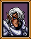
"선진에서 싸우고 싶소!"
"가끔 이곳에 내려와있는것도 좋소. 평화롭긴 하지만 조금 시끄럽긴하지."
일본명 : 아네스트
등장/언급된 게임들 : 없음
장착 가능한 무기 : 투창(스피어), 창(랜스)
동료가 되는 시기 : 우란바톨에서 자동으로
배울수 있는 마법 : 없음
설명 : 반카와 더불어 가장 꾸진 기사입니다. 언제 전직하느냐에 따라 타기사들보다 더 쓰임세가 바뀌겠지만 그것은 어니스트의 능력이 그런게 아니라 아서같이 제일일찍 전직하면 어니스트보다 훨씬 약해지는 기사들이 있기에 그런것이겠지요. 공격력은 봐줄만하지만 HP와 방어력이 현저하게 떨어집니다.
총점 : 5/10
라일
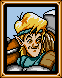
"적들은 어디에 있지? 다 터쳐버리겠어!"
"으아아...아, 미안. 잠깐 잠이 들었어. 이제 준비다됬어!"
등장/언급된 게임들 : 없음
장착 가능한 무기 : 활
동료가 되는 시기 : 6장 루도마을에서 대화를 한후
배울수 있는 마법 : 없음
설명 : 가장 높은 공격력을 가진 궁수입니다. 방어력은 그다지 높진 않습니다. 한스나 다이앤과 비교하자면 라일이 제일 나은것도 같지만 기동력이 제일 문제입니다. 따라서 지형에 따라서 누구를 데려갈지 선택을 잘하셔야합니다.
총점 : 7/10
블루
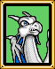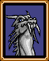
"내가 전투를 위해 준비를 하는것을 조상님들이 지켜봐주시는것같아. 그분들을 자랑스럽게 만들겠어!"
"꼬리치기를 연습하고있는중이야. 아직도 익숙해지지 않았어."
일본명 : 바류
등장/언급된 게임들 : 없음
장착 가능한 무기 : 없음
동료가 되는 시기 : 6장 드라고니아마을에서 자동으로
배울수 있는 마법 : 없음
설명 : 피터급정도는 아니어도 그래도 대단한 캐릭터이긴합니다. 날아다닐수 있으며 민첩성을 제외한 나머지스탯에서 80정도를 얻을수 있습니다. 다만 아서와 같이 레벨20에 전직을 한다는 조건아래서입니다. 레벨10에 전직하면 그저그런 캐릭터가 되고맙니다.
총점 : 10/10
무사시

"어서 가세 맥스! 그 짐승들이 룬대륙을 침탈한다는 생각을 할수가 없네!"
"하암. 아 미안 깜빡 잠이 들었나봐. 뭐 중요한 얘기라도 할게있나?"
등장/언급된 게임들 : 샤이닝포스 외전2, 샤이닝 더 홀리아크
장착 가능한 무기 : 검
동료가 되는 시기 : 7장 프롬프트에서 쿠스코왕을 만난후 벽지를 읽은후
배울수 있는 마법 : 없음
설명 : 한조와 함께 유일하게 전직이 되서 나오는 캐릭터입니다. 하지만 별로 단점은 아닙니다. 무사시가 레벨업만 하면 레벨20에 전직한 캐릭터들도 대부분 능가할수있을정도입니다. 다만 최대단점은 건츠와 마찬가지로 기동력입니다. 게다가 건츠와는 달리 지형에 구애를 받는다는게 역시 치명적입니다.
총점 : 9/10
알레프
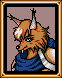
"끝까지 싸워 다크솔을 무찌르겠어!"
"후우 그 다크솔녀석은 내가 이곳에 있어서 참 다행이겠어. 내가 싸운다면 그녀석은 큰일날거라구."
등장/언급된 게임들 : 없음
장착 가능한 무기 : 지팡이
동료가 되는 시기 : 7장 고대의성에서 자동으로
배울수 있는 마법 : 블레이즈 (1 6) 프리즈 (3 9) 볼트 (12 17 22 30) 디소울 (26)
설명 : 공격마법의 꽃이라는 볼트4를 가지고있어 더욱 유명한 캐릭터입니다만 실제 전투에서는 그다지 쓰임세가 없습니다. 프리즈4보다 약간 더 대미지를 주는 정도이며 게다가 MP사용은 두배나 더 많습니다. 게다가 볼트4를 배울때까지 노가다를 각오하셔야합니다.
총점 : 5/10
토라수

"부디 다치지 않도록 조심하게. 동료들이 다치거나하면 내가 치료해주겠네."
"맥스, 자네도 이곳에 오게나. 꽤 재미있다네!"
등장/언급된 게임들 : 없음
장착 가능한 무기 : 지팡이
동료가 되는 시기 : 7장 고대의성에서 자동으로
배울수 있는 마법 : 힐 (1 7) 디톡스 (4) 실드 (12) 오라 (16 20 24 28)
설명 : 알레프와 함께 거의 막판에 동료가 됩니다. 게다가 전직도 안해가지고 동료가 되기 때문에 다른캐릭터들을 따라잡으려면 좀 노가다가 필요합니다. 많은 플래이어들이 오라4를 가지고 있는 유일한 캐릭터라는 이유로 가장 좋다고 생각하겠지만 실은 샤포1에서만큼은 오라4는 HP가 40까지밖에 안찹니다. 오히려 힐4를 가지고있는 크리스가 여러모로 더 쓸모가 있습니다. 그래도 전체스탯은 힐러들중에선 그나마 가장 높은편이라서 좋긴합니다.
총점 : 8/10
아담

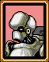
"저는 맥스님의 명령을 따르겠습니다. 적들을 가르킨후 제앞에서 물러나십시오!"
"다크솔에게 지금까지 벌여온일때문이라도 천벌을 주고 싶습니다. 저도 싸우게 해주십시오!"
등장/언급된 게임들 : 샤이닝포스 외전3 파이널 컨플릭트
장착 가능한 무기 : 없음
동료가 되는 시기 : 7장 메타파에서
배울수 있는 마법 : 없음
설명 : 아서와 같이 레벨10에 전직하면 완전 애물단지가 되는 캐릭터니만큼 반드시 레벨20에 전직시키는것이 좋습니다. 그렇게되면 정말 괜찮은 캐릭터가 됩니다. 다만 무사시보다 좋을점은 하나도 없습니다. 무사시와 마찬가지로 기동력이 가장 큰 흠이기도 합니다.
총점 : 8/10
한조우
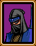
"이제 드디어 네 적들은 틀림없이 죽을것이다."
"내가 전투에 참가한다면 적들은 내가 오는것조차도 모를것이다."
등장/언급된 게임들 : 샤이닝포스 외전1, 샤이닝포스 외전3 : 파이널 컨플릭트, 샤이닝 더 홀리아크
장착 가능한 무기 : 검
동료가 되는 시기 : 8장 룬파우스트에서 수풀을 뒤진후
배울수 있는 마법 : 슬리프 (1) 디스펠 (4) 디소울 (7 25) 실드 (15)
설명 : 무사시와 함께 전직을 이미 한 상태로 동료가 되는 캐릭터입니다. 무사시와 달리 다른 캐릭터들이 이미 레벨20에 전직을 했다면 그리 빛을 못보는 캐릭터입니다. 마법은 그다지 쓸모는 없지만 그래도 쓰라고 있는만큼 제때제때 써주면 좋겠지요.
총점 : 7/10
주요 보스들
미샤엘라인형/마리오넷
등장/언급된 게임들 : 샤이닝포스 외전3 : 파이널 컨플릭트
전투 : 2장 3번째전투
공략법 : HP가 18이상인 캐릭터들만 공격합시다. 초반에 벌써 프리즈3인만큼 굉장히 아픕니다. 장거리공격역시 막바지가 아니면 피하는것이 좋습니다. 프리즈3를 때릴때 같이 맞습니다.
레이저아이
등장/언급된 게임들 : 없음
전투 : 3장 마지막전투
공략법 : 샤이닝포스2의 프리즘플라워와 비슷한 형태의 공격을 가합니다. 다만 공격범위가 세칸이나 되서 더 위험하지요. 그래도 다행인것은 한번 쏘면 다시 재충전을 할때까지 10턴이나 쉬게 됩니다. 그러니 일단 먼저 쏠때까지 범위에 아군들을 놓지 마시고 한번 쏘고난후 돌격하시면 됩니다.
엘리엇

등장/언급된 게임들 : 샤이닝포스 외전3 : 파이널 컨플릭트
전투 : 4장 첫번째전투
공략법 : 처음으로 만나게 되는 진정한 보스입니다. (레이저아이전투에서도 실제 보스는 실버나이트였죠.) 다른 보스들처럼 턴마다 HP가 20씩 회복이 됩니다. 공격력또한 무지 높기 때문에 맥스를 보호합시다. 한꺼번에 달려들어 속전속결로 끝내는것이 좋습니다.
발바자크
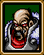
등장/언급된 게임들 : 없음
전투 : 4장 마지막전투
공략법 : 주요보스들중 가장 쉬우면서도 레벨업에 가장 도움을 주는 보스이기도 합니다. 레벨이 낮은경우 좀 위협적이긴 하겠지만 어느정도 레벨이 올라가면 발바자크가 한참 많이 때려야 골로 갈정도로 약합니다. 게다가 턴마다 HP가 20씩이나 차는것은 물론 그자리에서 움직이기도 않으니 특히 방어력이 약한 장거리캐릭터들을 레벨업하기에도 아주 좋습니다.
케인 (일본명 카인)


등장/언급된 게임들 : 샤이닝포스 외전3 : 파이널 컨플릭트
전투 : 6장 두번째 전투
공략법 : 엘리엇과 비슷한 방법으로 공략하시면 됩니다. 다만 어둠의검으로 디소울공격을 쓸수 있으므로 맥스로의 공격은 가급적 피하셔야합니다.
미샤엘라
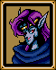
등장/언급된 게임들 : 샤이닝포스 외전3 : 파이널 컨플릭트, 샤이닝소울1
전투 : 6장 마지막 전투
기타공격 : 볼트 레벨2
공략법 : 꽤 강력합니다. 마법방어력도 엄청 높아서 마법대미지는 별로 많이 안입습니다. 볼트2에 많은 아군들이 피해를 입으므로 한명씩 한명씩 보내서 상대하고 또 HP가 없으면 물러서게 한다음 회복시켜서 다시 도전하게끔 하는것이 좋습니다.
케이오스

등장/언급된 게임들 : 샤이닝소울1
전투 : 7장 세번째 전투
공략법 : 케이오스자체보다는 주위의 적들이 아주 어려운데 전투도중 케이오스가 함께 공격하러 내려오는수가 있습니다. 그때는 아주 전투가 치열해지겠지요. 엘리엇을 상대한 방법으로 무찌릅시다.
람라두

등장/언급된 게임들 : 없음
전투 : 8장 두번째전투
공략법 : 한꺼번에 몰려들어 다구리를 하면 끝입니다. 공격력하나만큼은 아주 높으니 주요 공격은 건츠같이 몸빵이 좋은 아군에게 시킵시다. 가끔 회복주문을 사용하는 경우도 있습니다.
콜로서스

등장/언급된 게임들 : 없음
전투 : 8장 세번째전투
공략법 : 보스가 셋이나 나타납니다. 왼쪽오른쪽은 블레이즈와 프리즈 마법공격을 지니고 있지만 가운데놈은 볼트2를 가지고 있습니다. 가운데놈을 죽이면 전투가 끝나지만 역시 한꺼번에 세놈과 함께 싸우게 되므로 만반의 준비를 다하셔야합니다. 실드마법을 쓸수있는 한조와 토라수를 가지고 가면 안심이 되긴 합니다.
다크솔

등장/언급된 게임들 : 샤이닝포스2,샤이닝포스 외전3 : 파이널 컨플릭트, 샤이닝포스3 프리미엄 디스크, 샤이닝 & 더 다크네스, 샤이닝소울1, 클라이맥스 랜더스
전투 : 그라운드실로 들어간후 첫전투
공략법 : 한꺼번에 공격하는것은 피합시다. 데몬브레스를 맞을수가 있습니다. 마법공격 역시 미샤엘라와 마찬가지로 잘 안통하며 물리적공격도 이따금씩 잘 피하긴하지만 그게 유일한 공략법입니다. HP는 회복하지 않습니다.
다크드래곤
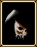
등장/언급된 게임들 : 샤이닝포스 외전1, 샤이닝포스 외전3 : 파이널 컨플릭트, 샤이닝포스2, 샤이닝포스3 프리미엄 디스크
전투 : 전투 42
공략법 : 어려운 상대이긴 하나 기본공략법은 의외로 간단합니다. 왼쪽머리부터 없앤후 그다음 오른쪽머리를 없애며 마지막으로 가운데머리를 공격하는것입니다. 아군들을 함께 모이게 하지 않는것이 좋습니다. HP는 회복하지 않습니다.
기타 캐릭터들
바리오스
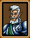
등장/언급된 게임들 : 없음
설명 : 맥스의 스승이며 매이의 아버지입니다. 게임초반쯤에 금방 살해당합니다.
가디아나왕

등장/언급된 게임들 : 없음
설명 : 다크드래곤을 봉인하였고 그 서쪽관문을 지킨 고대인들의 후손입니다. 바리오스와 함께 살해당합니다.
오트란트

등장/언급된 게임들 : 샤이닝포스 외전3 : 파이널 컨플릭트
설명 : 맥스에게 고대이야기를 들려주며 도와주는 캐릭터입니다. 예언가로써 맥스의형 케인에게 동생인 맥스와 아들인 이안의 운명을 알려줍니다.
성호수의정령
등장/언급된 게임들 : 없음
설명 : 메타파에 고대인들이 남겨놓은 정령입니다. 맥스에게 다크드래곤을 막을 방법을 알려주며 카오스브레이커를 제조하는 방법을 가르쳐주기도 합니다.
셸
등장/언급된 게임들 : 없음
설명 : 배가 좌초되었을때 워럴섬으로 안내해줍니다.
쿠스코

등장/언급된 게임들 : 샤이닝포스2
설명 : 프롬프트의 왕입니다. 고대인들의 후손으로 다크드래곤에 대해 자세하게 알고 있습니다.